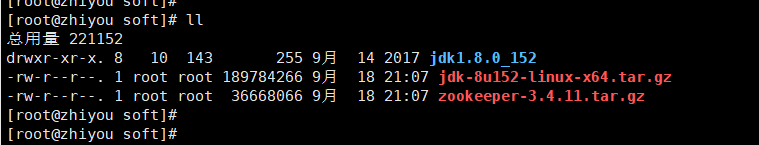
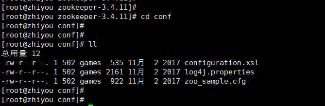

tar -zxvf zookeeper-3.4.11.tar.gz
我们看下解压完成后，zookeeper文件夹的内容：
conf 文件夹下，可以看到该文件夹的内容如下：
cp zoo_sample.cfg zoo.cfg
这里，我们需要注意上图标白的dataDir位置对应的目录，如果对应的目录不存在，我们需要修改该路径，我们先在zookeeper的解压路径下创建一个新的文件夹 data。
然后，我们将刚刚创建的文件夹路径设置到 dataDir 下：
其中，可以通过修改clientPort后面的值，修改zookeeper启动端口，默认为2181.
./zkServer.sh start
-5 检查zookeeper启动情况
我们可以使用以下命令查看zookeeper的启动状态：
./zkServer.sh status
除此之外，我们也可以通过查看zookeeper的进程来判断其是否启动成功！
ps -ef | grep zookeeper
我们可以将zookeeper作为一个服务，设置其开机自启，这样每次我们打开虚拟机就可以开启zookeeper，彻底解放双手！设置zookeeper开机自启需要以下几个步骤：
/etc/init.d 目录：vi zookeeper
脚本内容为：
#!/bin/bash
#chkconfig:2345 20 90
#description:zookeeper
#processname:zookeeper
ZK_PATH=/opt/soft/zookeeper-3.4.11
export JAVA_HOME=/opt/soft/jdk1.8.0_152
case $1 in
start) sh $ZK_PATH/bin/zkServer.sh start;;
stop) sh $ZK_PATH/bin/zkServer.sh stop;;
status) sh $ZK_PATH/bin/zkServer.sh status;;
restart) sh $ZK_PATH/bin/zkServer.sh restart;;
*) echo "require start|stop|status|restart" ;;
esac注意：上图的脚本中需要修改正确的zk和jdk安装路径！
chkconfig --add zookeeper
[root@zhiyou init.d]# service zookeeper start
env: /etc/init.d/zookeeper: 权限不够
[root@zhiyou init.d]#
[root@zhiyou init.d]# chmod +x zookeeper
[root@zhiyou init.d]#
[root@zhiyou init.d]# service zookeeper start
ZooKeeper JMX enabled by default
Using config: /opt/soft/zookeeper-3.4.11/bin/../conf/zoo.cfg
Starting zookeeper ... STARTED
[root@zhiyou init.d]#
[root@zhiyou init.d]# service zookeeper status
ZooKeeper JMX enabled by default
Using config: /opt/soft/zookeeper-3.4.11/bin/../conf/zoo.cfg
Mode: standalone
[root@zhiyou init.d]#
[root@zhiyou init.d]# ps -ef|grep zookeeper至此，我们已经完成了在centos7下安装zookeeper的全部步骤，以及设置了zookeeper开机自启动！